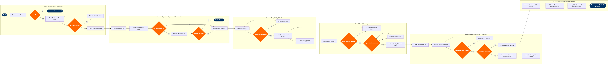

Group Sales Revenue Management
Network Planning & Scheduling › Revenue Management · 19 L4 steps · 6 phases · 4 decision gates · Updated 2026-10-01 22:55
📊
Process Flow Diagram (BPMN)

📋
L4 Process Steps
| Step | Step Name | Role / Swim Lane | System | Input | Output | KPI | Dec? | Exc? |
|---|---|---|---|---|---|---|---|---|
Phase 1 1.1 |
Receive Group Booking Request | Group Sales Coordinator | Amadeus Altéa PSS | Group booking request via SWABIZ portal, GDS, travel agency, or direct sales channel | Logged group enquiry record with O&D, travel dates, pax count, and contact details | Request acknowledgement within 4 business hours; ≥95% SLA compliance | N | N |
| 1.2 | Validate Group Size Eligibility | Group Sales Coordinator | Amadeus Altéa PSS | Passenger count stated in group request | Eligibility determination: group (≥10 pax) or retail redirection | 100% of sub-threshold requests correctly redirected to retail within 1 business hour | Y | N |
| 1.3 | Check Blackout & Peak Period Restrictions | Group Sales Coordinator | Amadeus Revenue Management (NRM) | Travel date range from group request; current peak calendar in NRM | Date eligibility flag; alternate date suggestions if blocked | Blackout date check completed in <10 minutes; alternate date acceptance rate ≥40% | Y | N |
| 1.4 | Confirm O&D, Routing & Itinerary | Group Sales Coordinator | Amadeus Altéa PSS | Validated group request with confirmed dates and pax count | Structured group itinerary record with flight segments and class of service | Itinerary confirmed and filed in PSS within 2 hours of initial request | N | N |
Phase 2 2.1 |
Query Real-Time O&D Inventory Availability | Revenue Management Analyst | Amadeus Revenue Management (NRM) | Group itinerary with specific flight segments, dates, and fare class requirement | Current availability by booking class for each segment; load factor snapshot | Inventory query response in <30 seconds; data freshness lag ≤5 minutes | N | N |
| 2.2 | Run Displacement Cost Analysis | Revenue Management Analyst | Amadeus Revenue Management (NRM) | Requested seat block size; current booking curve; O&D demand forecast from SkyCAST | Displacement cost per seat (value of individual bookings that would be displaced); net revenue impact estimate | Displacement model accuracy ≥88% vs. actual realised revenue; analysis completed in <15 minutes | N | N |
| 2.3 | Assess Net Revenue Impact of Group Block | Revenue Management Analyst | Amadeus Revenue Management (NRM) | Displacement cost analysis; proposed group fare; seat block size | Net revenue positive/negative determination; RM recommendation (accept / reject / counter-date) | Group acceptance rate ≥65% of qualified requests; average group yield ≥85% of displacement cost | Y | Y |
Phase 3 3.1 |
Calculate Block Fare Using Group Pricing Model | Revenue Management Analyst | Amadeus Revenue Management (NRM) | Net revenue impact assessment; group discount policy matrix; fare class availability | Proposed group fare per pax; total block revenue estimate | Group fare ≥95% of minimum acceptable yield threshold; pricing turnaround ≤30 minutes | N | N |
| 3.2 | Validate Fare Against Discount Authority Matrix | Revenue Management Analyst | Amadeus Revenue Management (NRM) | Proposed group fare; discount authority thresholds by market tier and season | Authority level determination: standard approval, RM manager review, or director escalation | 100% of quotes validated against authority matrix before issue; zero out-of-authority quotes issued | Y | N |
| 3.3 | Generate Formal Group Quote Document | Group Sales Coordinator | Amadeus Altéa PSS | Approved group fare; name release schedule; deposit terms; ticketing deadline | Formal group quote with fare, seat block, deposit amount, name release dates, and ticketing deadline | Quote issued within 24 hours of request receipt; quote acceptance rate ≥55% | N | N |
Phase 4 4.1 |
Conduct Sales Negotiation with Group Organiser | Group Sales Manager | Sabre PRISM | Formal group quote; organiser counter-proposal (if any); competitive market rates | Agreed terms or revised counter-offer; negotiation log entry | Negotiation cycle ≤3 rounds to final agreement; average concession depth ≤5% below initial quote | N | N |
| 4.2 | Obtain Final RM Approval for Confirmed Terms | Revenue Management Manager | Amadeus Revenue Management (NRM) | Final agreed group terms; revenue impact recalculation at agreed fare | RM approval stamp; booking authority granted to sales team | Approval response within 4 business hours; ≤10% of groups requiring director-level escalation | N | N |
| 4.3 | Confirm Group Booking & Collect Deposit | Group Sales Coordinator | Amadeus Altéa PSS | RM approval; signed group contract; deposit payment from organiser | Confirmed group PNR with seat block held; deposit receipt; booking confirmation to organiser | Deposit collection rate ≥98% of confirmed bookings; booking confirmation issued within 2 hours of receipt of signed contract | N | Y |
Phase 5 5.1 |
Create Seat Block in PSS Inventory | Revenue Management Analyst | Amadeus Altéa PSS | Confirmed group PNR; approved seat block size; fare class assignment | Hard-blocked seat inventory removed from open sale; group booking class activated | Seat block created within 1 hour of booking confirmation; zero inventory discrepancy vs. PNR | N | N |
| 5.2 | Monitor Name Release & Ticketing Deadlines | Group Sales Coordinator | Amadeus Altéa PSS | Name release schedule from group contract; automated deadline alerts from PSS | Name submission status updates; reminder communications to group organiser | ≥90% of names submitted by first release deadline; ticketing deadline breach rate <5% | N | Y |
| 5.3 | Release Unsold Seats to Open Inventory | Revenue Management Analyst | Amadeus Revenue Management (NRM) | Final name count at ticketing deadline; remaining unoccupied seats in block | Released seats returned to NRM availability; booking class reopened for retail sale | Unsold seats released ≥72 hours before departure; recaptured revenue from released seats ≥60% of displacement cost on released units | N | N |
Phase 6 6.1 |
Process Final Passenger Manifest & Settlement | Group Sales Coordinator | Amadeus Altéa PSS | Final confirmed passenger names; actual tickets issued; deposit and balance payment records | Closed group PNR; final invoice; payment settled in SAP S/4HANA Finance | Final settlement completed within 5 business days post-travel; payment reconciliation accuracy ≥99.5% | N | Y |
| 6.2 | Calculate Revenue Variance vs. Forecast | Revenue Management Analyst | AWS Redshift | Actual group revenue from SAP FI; forecast revenue from NRM displacement model; seat block utilisation data | Revenue variance report; yield performance vs. plan; group booking contribution analysis | Forecast vs. actual variance ≤8%; group contribution to total flight revenue ≥12% on applicable routes | N | N |
| 6.3 | Update RM Demand Forecasting Model with Actuals | Revenue Management Analyst | Amadeus Revenue Management (NRM) | Revenue variance report; actual load factor contribution from group block; group yield data | Updated demand coefficients in NRM forecasting model; group segment historical database entry | Model update completed within 10 business days post-travel; forecast accuracy improvement of ≥0.5% per cycle | N | N |
📋